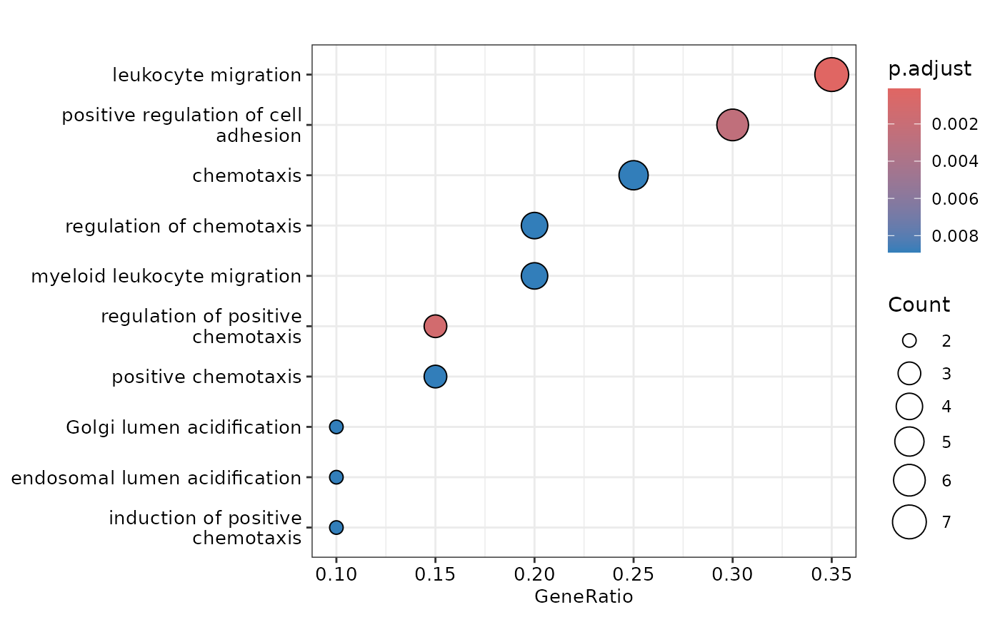
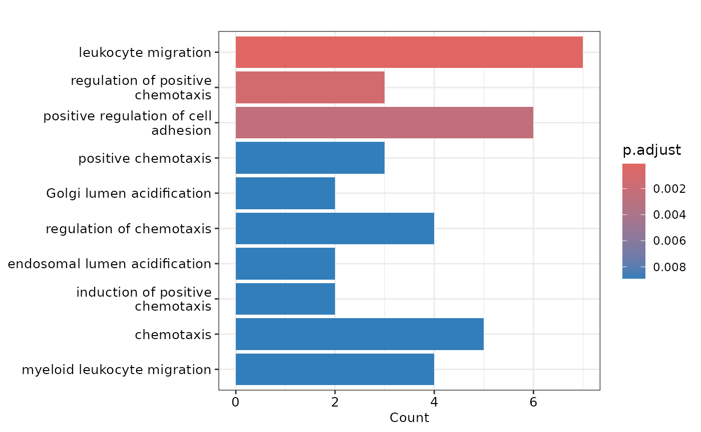
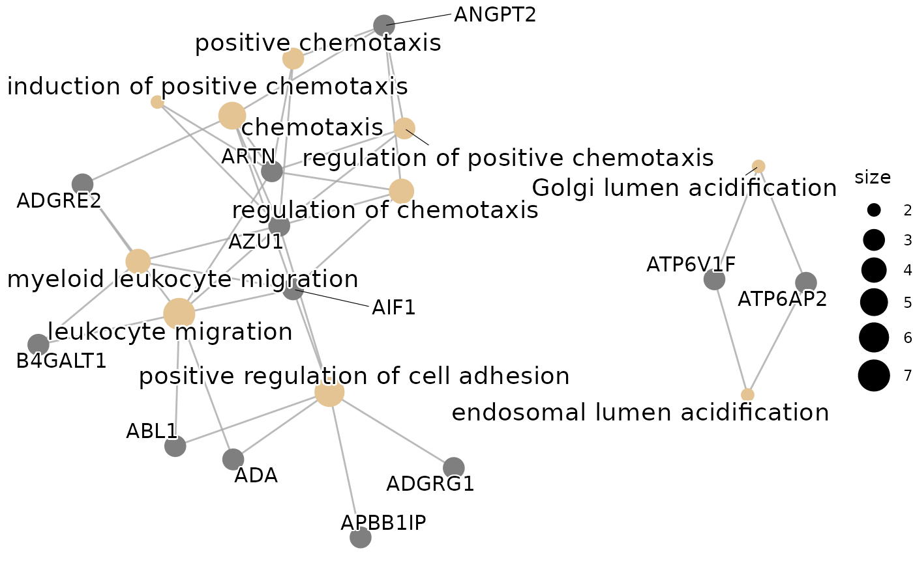
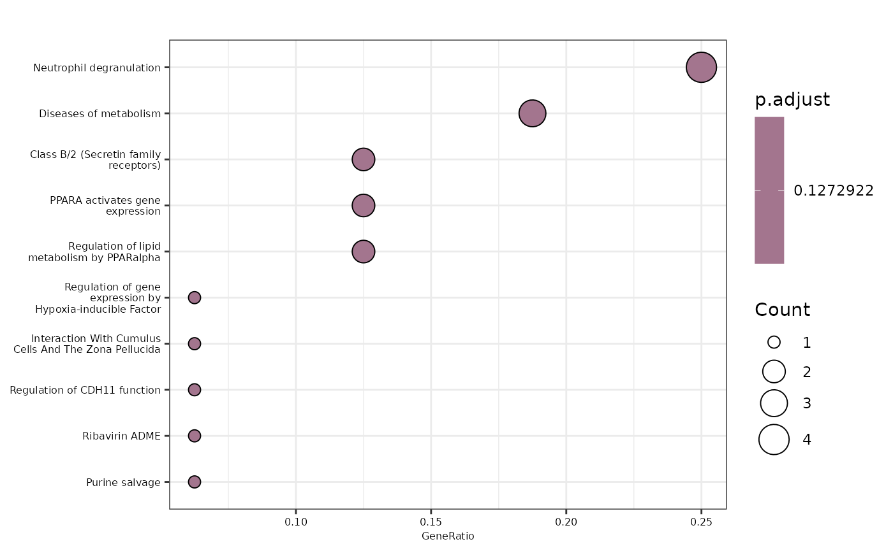
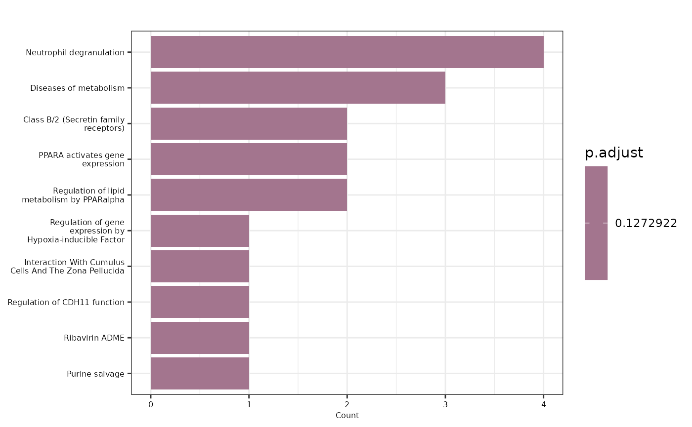
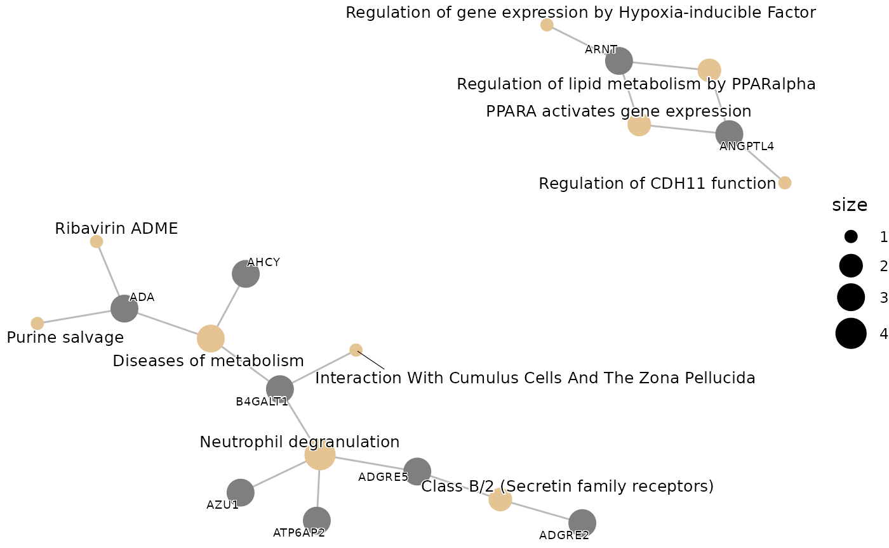
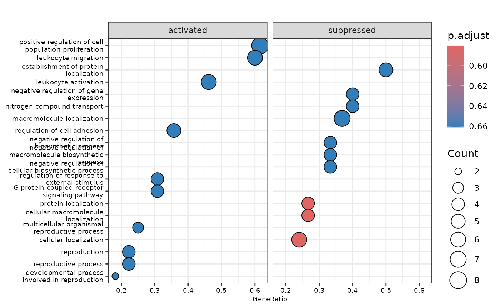
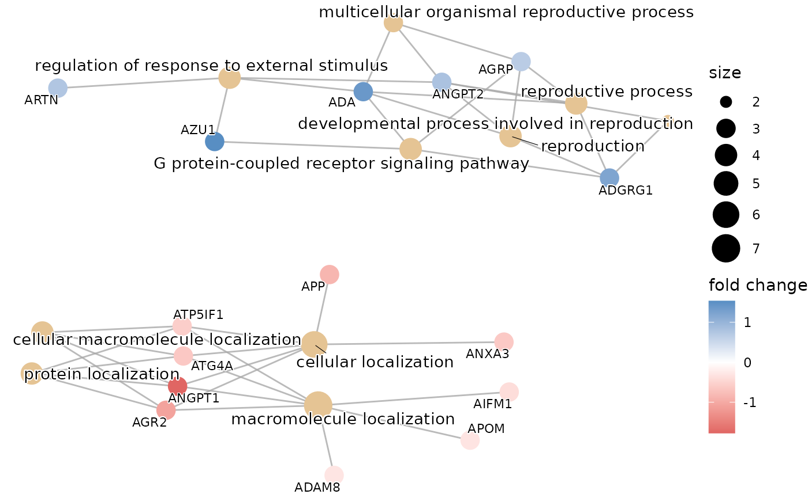
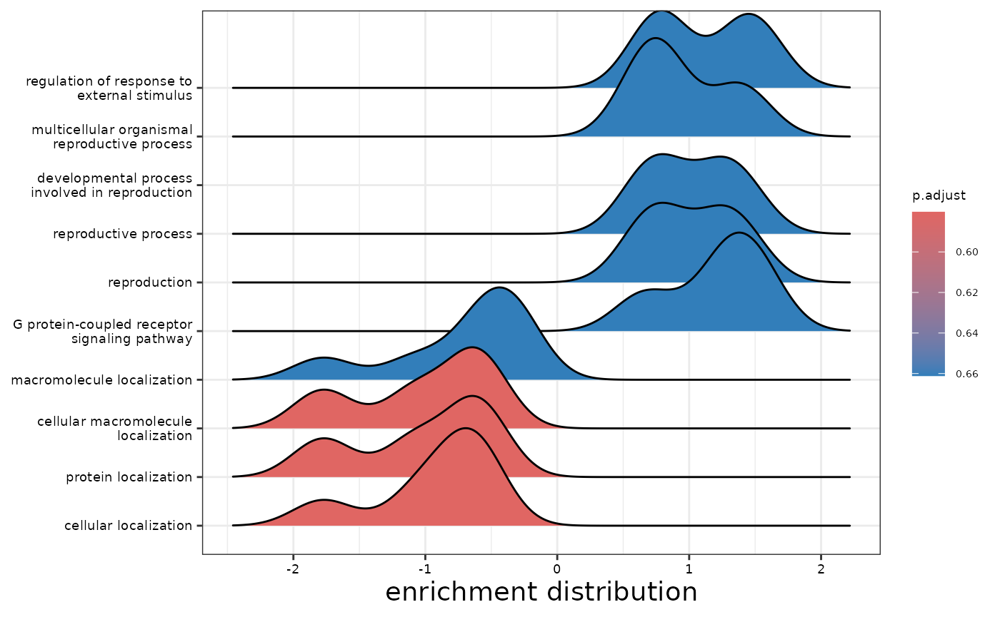
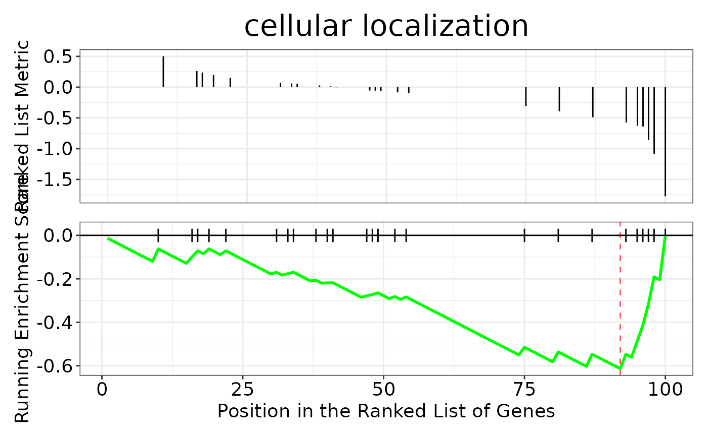

Post Analysis: Pathway Enrichment & Automated Literature Search
Source:vignettes/post_analysis.Rmd
post_analysis.RmdThis vignette will guide you through the post analysis of the results
obtained from the HDAnalyzeR pipeline. The post analysis consists of two
possible steps: pathway enrichment analysis and automated literature
search. The pathway enrichment analysis is performed using the Gene
Ontology and Reactome databases from clusterProfiler and
ReactomePA packages respectively. The automated literature
search is performed using the the PubMed database.
Let’s start by loading the packages, widen the example dataset, load the metadata, and run some differential expression analysis to get the results for the post analysis. For the Over Representation Analysis we could also use the features list from the classification models or even run both and get the intersect as it is done in the Get Started guide.
library(HDAnalyzeR)
library(dplyr)
#>
#> Attaching package: 'dplyr'
#> The following objects are masked from 'package:stats':
#>
#> filter, lag
#> The following objects are masked from 'package:base':
#>
#> intersect, setdiff, setequal, union
library(utils)
wide_data <- widen_data(example_data)
metadata <- example_metadata
de_res <- do_limma(wide_data, metadata, case = "AML", control = c("CLL", "MYEL", "GLIOM"))
#> Comparing AML with CLL, MYEL, GLIOM.
#> Warning in do_limma_de(join_data, variable, case, control, correct,
#> correct_type, : 400 rows were removed because they contain NAs in Disease or
#> Sex, Age!First, we will perform an Over Representation Analysis (ORA) using
the Gene Ontology database. We will use the do_ora()
function. The function requires a list of proteins. In this example we
will extract the top-20 up-regulated proteins.
proteins <- de_res$de_results |> filter(logFC > 0) |> pull(Assay) |> head(20)
ora_res <- do_ora(proteins, "GO")
#> No background provided. When working with Olink data it is recommended to use background.
#>
#>
#> 'select()' returned 1:1 mapping between keys and columns
plot_ora(ora_res, proteins)
#> 'select()' returned 1:1 mapping between keys and columns
#> $dotplot
#>
#> $barplot
#>
#> $cnetplot
> 📓 When working with a real Olink dataset, it is recommended to use
a background list of proteins that are present in the Olink panel to
minimize bias. This can be done by using the background
parameter in the do_ora() function.
Let’s change the database and the p-value threshold.
ora_res <- do_ora(proteins, "Reactome", pval = 0.2)
#> No background provided. When working with Olink data it is recommended to use background.
#> 'select()' returned 1:1 mapping between keys and columns
#> Loading required package: org.Hs.eg.db
#> Loading required package: AnnotationDbi
#> Loading required package: stats4
#> Loading required package: BiocGenerics
#>
#> Attaching package: 'BiocGenerics'
#> The following objects are masked from 'package:dplyr':
#>
#> combine, intersect, setdiff, union
#> The following objects are masked from 'package:stats':
#>
#> IQR, mad, sd, var, xtabs
#> The following objects are masked from 'package:base':
#>
#> anyDuplicated, aperm, append, as.data.frame, basename, cbind,
#> colnames, dirname, do.call, duplicated, eval, evalq, Filter, Find,
#> get, grep, grepl, intersect, is.unsorted, lapply, Map, mapply,
#> match, mget, order, paste, pmax, pmax.int, pmin, pmin.int,
#> Position, rank, rbind, Reduce, rownames, sapply, setdiff, table,
#> tapply, union, unique, unsplit, which.max, which.min
#> Loading required package: Biobase
#> Welcome to Bioconductor
#>
#> Vignettes contain introductory material; view with
#> 'browseVignettes()'. To cite Bioconductor, see
#> 'citation("Biobase")', and for packages 'citation("pkgname")'.
#> Loading required package: IRanges
#> Loading required package: S4Vectors
#>
#> Attaching package: 'S4Vectors'
#> The following objects are masked from 'package:dplyr':
#>
#> first, rename
#> The following object is masked from 'package:utils':
#>
#> findMatches
#> The following objects are masked from 'package:base':
#>
#> expand.grid, I, unname
#>
#> Attaching package: 'IRanges'
#> The following objects are masked from 'package:dplyr':
#>
#> collapse, desc, slice
#>
#> Attaching package: 'AnnotationDbi'
#> The following object is masked from 'package:dplyr':
#>
#> select
plot_ora(ora_res, proteins, pval = 0.2, fontsize = 6)
#> 'select()' returned 1:1 mapping between keys and columns
#> $dotplot
#>
#> $barplot
#>
#> $cnetplot
We can also run a Gene Set Enrichment Analysis (GSEA) using the
do_gsea() function. In this case, the function requires
differential expression results.
gsea_res <- do_gsea(de_res$de_results, "GO", pval_lim = 0.7)
#> 'select()' returned 1:1 mapping between keys and columns
#> using 'fgsea' for GSEA analysis, please cite Korotkevich et al (2019).
#> preparing geneSet collections...
#> GSEA analysis...
#> leading edge analysis...
#> done...
plot_gsea(gsea_res, de_res$de_results, pval_lim = 0.7, fontsize = 7)
#> $enrichment
#> #
#> # Gene Set Enrichment Analysis
#> #
#> #...@organism Homo sapiens
#> #...@setType BP
#> #...@keytype ENTREZID
#> #...@geneList Named num [1:100] 1.534 1.39 1.212 0.824 0.81 ...
#> - attr(*, "names")= chr [1:100] "566" "100" "9289" "54518" ...
#> #...nPerm
#> #...pvalues adjusted by 'BH' with cutoff <0.7
#> #...188 enriched terms found
#> 'data.frame': 188 obs. of 11 variables:
#> $ ID : chr "GO:0051641" "GO:0008104" "GO:0070727" "GO:0032101" ...
#> $ Description : chr "cellular localization" "protein localization" "cellular macromolecule localization" "regulation of response to external stimulus" ...
#> $ setSize : int 25 15 15 13 12 19 11 18 18 13 ...
#> $ enrichmentScore: num -0.613 -0.684 -0.684 0.644 0.663 ...
#> $ NES : num -1.71 -1.7 -1.7 1.63 1.62 ...
#> $ pvalue : num 0.00371 0.00645 0.00645 0.02385 0.02319 ...
#> $ p.adjust : num 0.58 0.58 0.58 0.661 0.661 ...
#> $ qvalue : num 0.58 0.58 0.58 0.661 0.661 ...
#> $ rank : num 9 9 9 6 8 9 5 8 8 8 ...
#> $ leading_edge : chr "tags=24%, list=9%, signal=29%" "tags=27%, list=9%, signal=29%" "tags=27%, list=9%, signal=29%" "tags=31%, list=6%, signal=33%" ...
#> $ core_enrichment: chr "ATP5IF1/ANXA3/ATG4A/APP/AGR2/ANGPT1" "ATP5IF1/ATG4A/AGR2/ANGPT1" "ATP5IF1/ATG4A/AGR2/ANGPT1" "AZU1/ADA/ANGPT2/ARTN" ...
#> #...Citation
#> T Wu, E Hu, S Xu, M Chen, P Guo, Z Dai, T Feng, L Zhou, W Tang, L Zhan, X Fu, S Liu, X Bo, and G Yu.
#> clusterProfiler 4.0: A universal enrichment tool for interpreting omics data.
#> The Innovation. 2021, 2(3):100141
#>
#>
#> $dotplot
#>
#> $cnetplot
#>
#> $ridgeplot
#> Picking joint bandwidth of 0.228
#>
#> $gseaplot
Finally, let’s perform an automated literature search using the
literature_search(). The function requires a list with
disease names as names and proteins as values. We will create the list,
run the search and preview the results.
biomarkers <- list("acute myeloid leukemia" = c("FLT3", "EPO"),
"chronic lymphocytic leukemia" = c("PARP1", "FCER2"))
lit_res <- literature_search(biomarkers, max_articles = 5)
#> Searching for articles on FLT3 and acute myeloid leukemia
#> Searching for articles on EPO and acute myeloid leukemia
#> Searching for articles on PARP1 and chronic lymphocytic leukemia
#> Searching for articles on FCER2 and chronic lymphocytic leukemia
lit_res$`acute myeloid leukemia`$FLT3$title
#> [1] "Concurrent versus sequential or no triazole anti-fungal therapy in patients undergoing 7 + 3 plus midostaurin induction for FLT-3 acute myelogenous leukemia."
#> [2] "Genetic Risk Stratification and Outcomes Among Treatment-Naive Patients With AML Treated With Venetoclax and Azacitidine."
#> [3] "Decoding the anti-cancer potential of Pexidartinib (PLX3397), a Fms-like tyrosine kinase 3 inhibitor, using next-generation knowledge discovery methods."
#> [4] "Influence of genetic co-mutation on chemotherapeutic outcome in NPM1-mutated and FLT3-ITD wild-type AML patients."
#> [5] "Discovery of NFκB2-Coordinated Dual Regulation of Mitochondrial and Nuclear Genomes Leads to an Effective Therapy for Acute Myeloid Leukemia."📓 Remember that these data are a dummy-dataset with fake data and the results in this guide should not be interpreted as real results. The purpose of this vignette is to show you how to use the package and its functions.